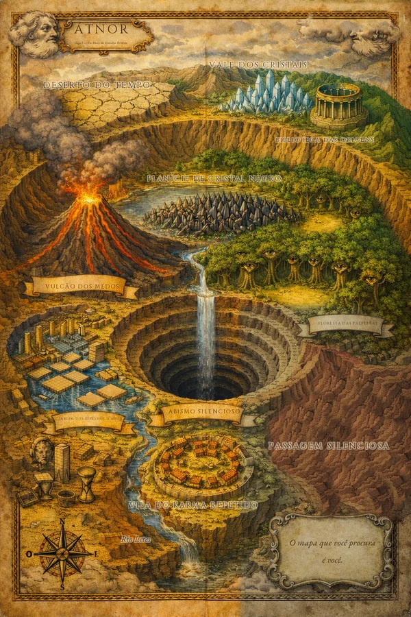

A Saga da Fenda Interior
ConfirmadoÁtnor
◆
O mapa é seu. Auron Sollis desenhou para quem viesse depois — e você veio.
Os dois arquivos estão aqui embaixo. Guarde-os: este endereço some quando você fechar a aba, mas o e-mail de confirmação continua na sua caixa.
O terceiro item da promessa não cabe em arquivo: quando o Livro II sair, o aviso vai para o seu e-mail antes de a loja saber. Não mando mais nada além disso.

Galeria de Átnor Conheça o mundo antes de entrar nele Os guardiões, os tentadores e as treze lâminas dos capítulos.